Products: Permes Hub (launcher) + Permes Executor (in-game assistant)
Compiled from: official tutorial videos, the Help & Diagnosis knowledge base, and official screenshots
Last updated: 2026-07-23
Permes has two components, and both must stay running:
| Component | Role |
|---|---|
| Permes Hub | Launcher & manager: license activation, executor download/updates, recharge, points & events, customer support |
| Permes Executor | The worker: reads the game screen (OCR + pixel recognition) and sends keys according to the rotation rules |
⚠ Keep Permes Hub running while in use (a persistent banner on the executor window says the same). Closing the Hub stops the executor.
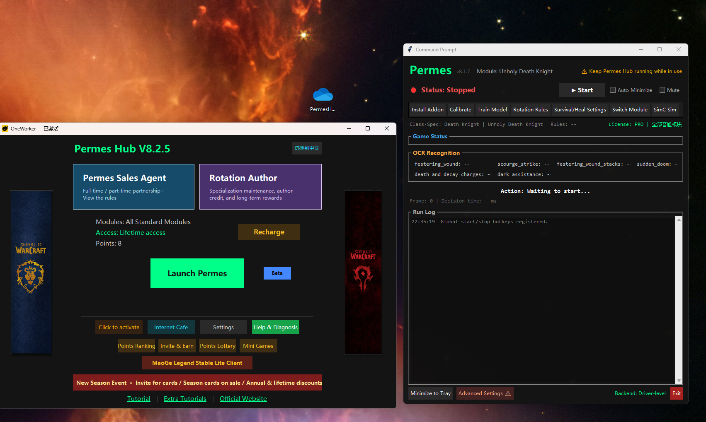
Left: Permes Hub main window (Launch Permes, Recharge, Settings, Points Ranking, Invite & Earn, Points Lottery, Mini Games). Right: Permes Executor console (Start/Stop and the Install Addon / Calibrate / Train Model / Rotation Rules / Survival/Heal Settings / Switch Module / SimC Sim tabs).
Full flow: install Hub → activate → launch the executor → install the in-game addon → in-game setup → calibrate → (optional) model training → fight.
PermesHub_Setup.exe.If you use a Logitech mouse, the Hub's GHUB Key Protection button opens Logitech G HUB to work with key protection.
_retail_ folder (e.g. D:\World of Warcraft\_retail_) — this is the most common mistake; the addon won't work in the wrong folder.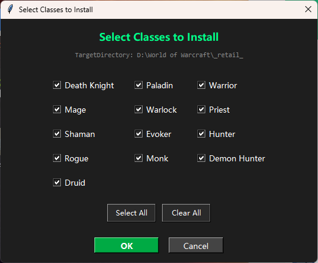
After installation the addon shows up in the in-game AddOn list under a randomized name (e.g. P3F8847DE). This disguise is intentional — not finding anything called "Permes" is normal.
The first thing to do after entering the game: click Switch Module in the executor, pick your current character's class + spec, then OK.
⚠ Pick the spec of the character you are actually playing. The wrong spec means wrong rotation, wrong keybinds, and wrong recognition regions.
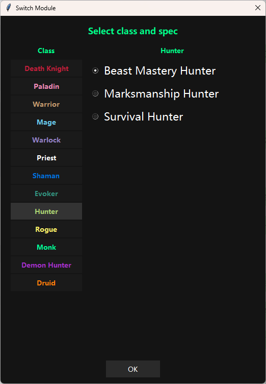
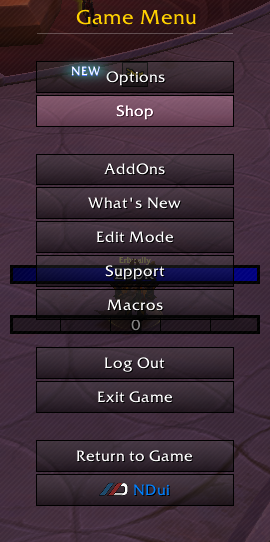
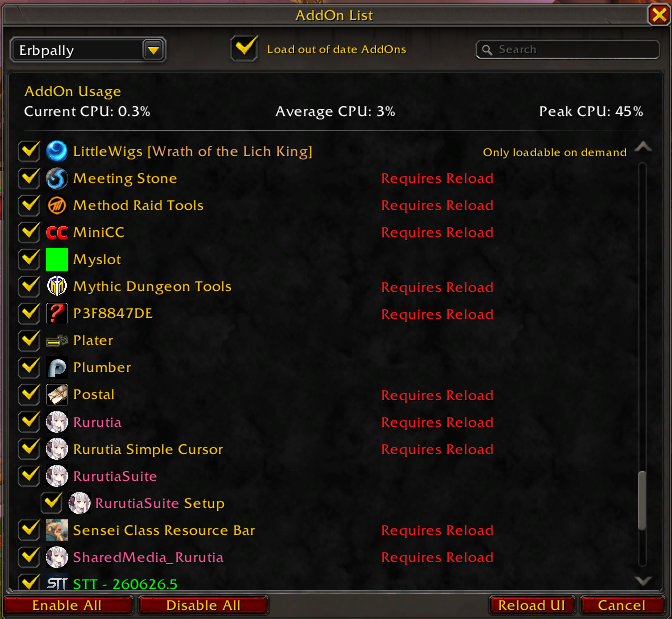
Permes reads ability cooldowns and buff stacks through the game's built-in Cooldown Manager, which must be configured correctly:
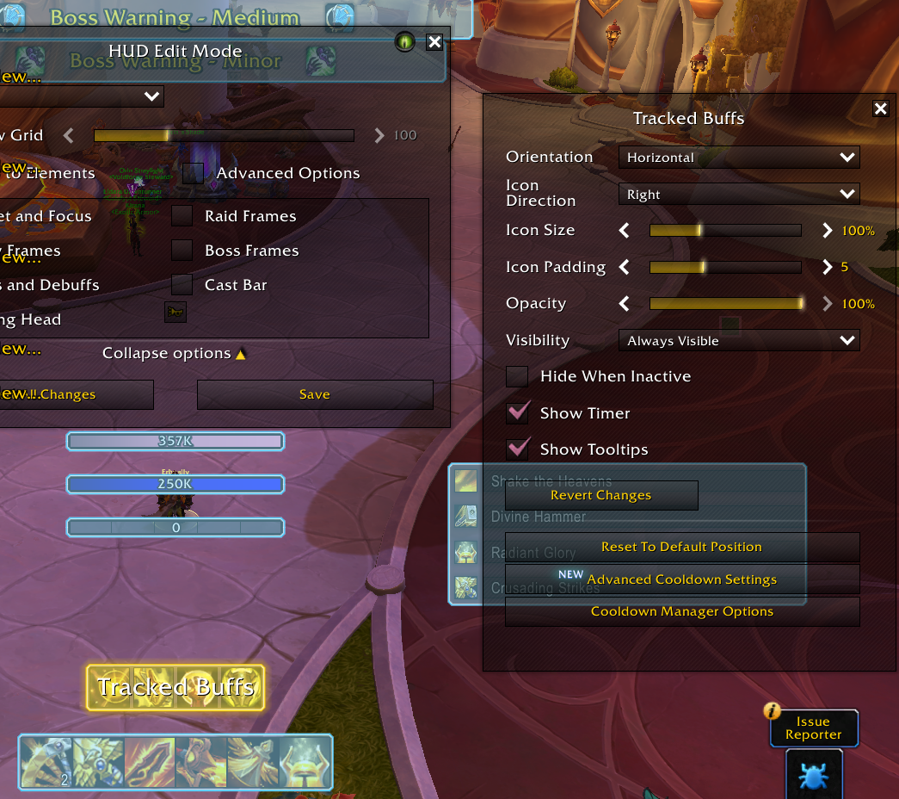
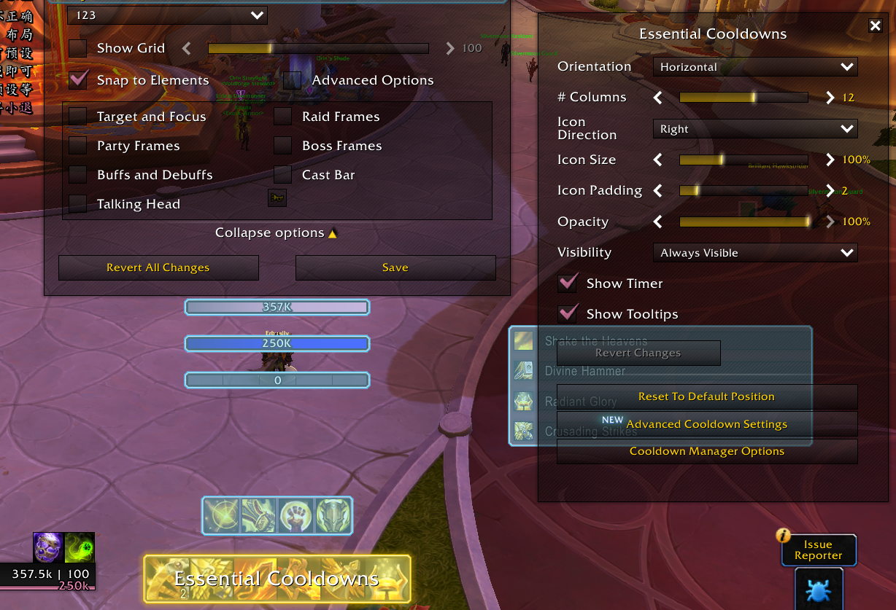
If your Cooldown Manager layout doesn't match the official requirement (a banner appears saying required abilities are missing):
Calibration tells the executor where each number sits on your screen:
5 ROI coordinates exported, please /reload./reload in chat — calibration only takes effect after a reload.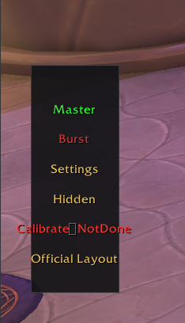
Verify calibration:
Permes' number-recognition model is trained and runs locally. You must train your own model when:
The vertical floating menu on the left of the game screen is your daily control center:
| Item | Function |
|---|---|
| Master | Green = on / red = off. Permes sends keys per the rotation while on. Keep it on |
| Burst | Burst ability switch — on during burst phases |
| Mode | Auto / Single-target / AoE |
| Settings | Opens the addon settings panel (see 5.2) |
| Hidden | Hides the dock |
| Calibrate | Shows calibration status; click to recalibrate |
| Official Layout | One-click import of the official UI layout |
① Settings tab
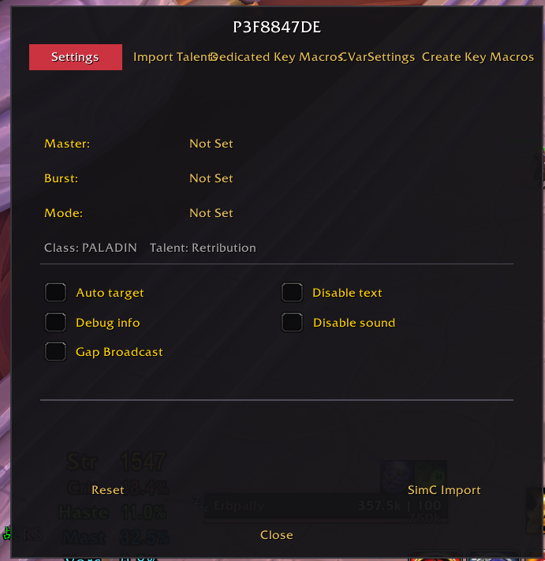
② Import Talents tab
Lists official talent builds (e.g. a 1-minute burst build and a 30-second burst build). Select one and click Apply.
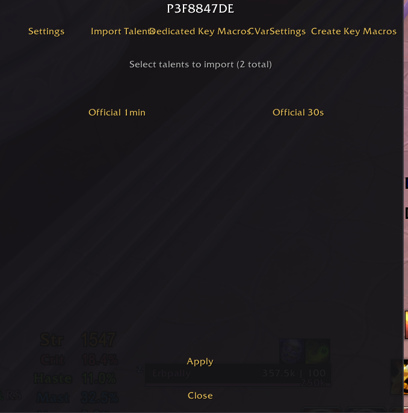
③ Dedicated Key Macros tab
Every ability of the current spec with its keybind; click Edit next to an ability to change it. These keybinds must match your actual in-game keybinds for Permes to press the right keys.
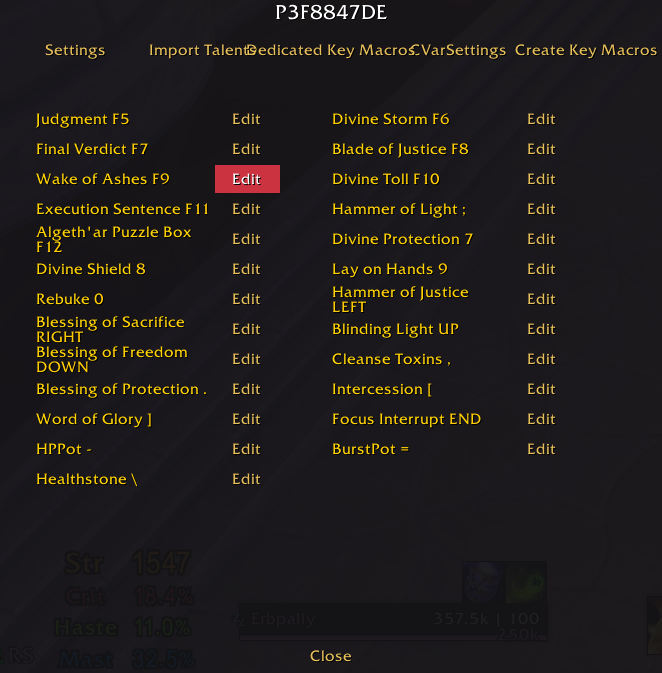
④ CVarSettings tab (game parameter optimization)
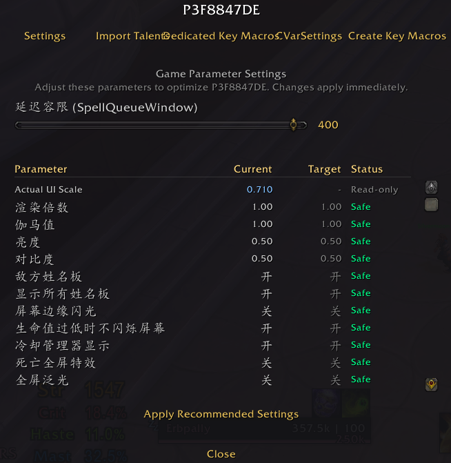
⑤ Create Key Macros tab
General macro commands — type them in chat to apply, or copy them into an in-game macro and bind to a key:
| Command | Effect |
|---|---|
/ON |
Master switch on |
/OFF |
Master switch off |
/bfk |
Burst on |
/bfg |
Burst off |
/dan |
Single-target mode |
/qun |
AoE mode |
/zi |
Auto mode |
/charu |
Temporarily disables Master for 0.5s (for weaving in manual abilities) |
Typical /charu usage — weave mouseover manual abilities into a macro so they don't fight the auto rotation:
/charu
/cast [@mouseover,harm,exists]Death Grip;Death Grip
/charu
/cast [@player]Anti-Magic Zone
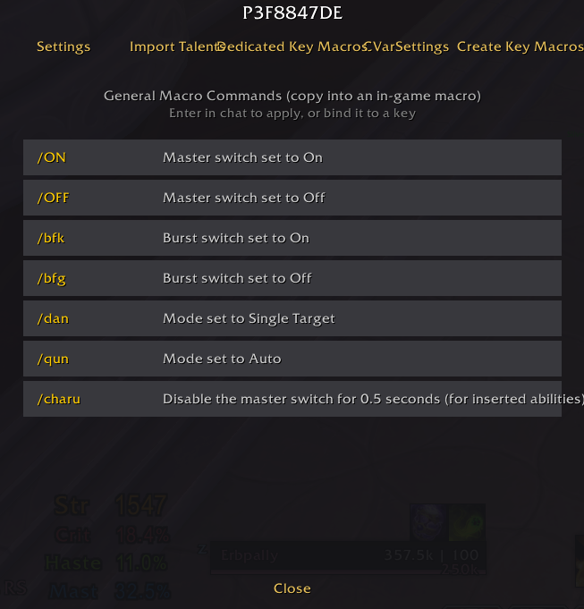
Executor → Rotation Rules: the left side lists action sources (ability → keybind), the right side is the rotation pipeline:
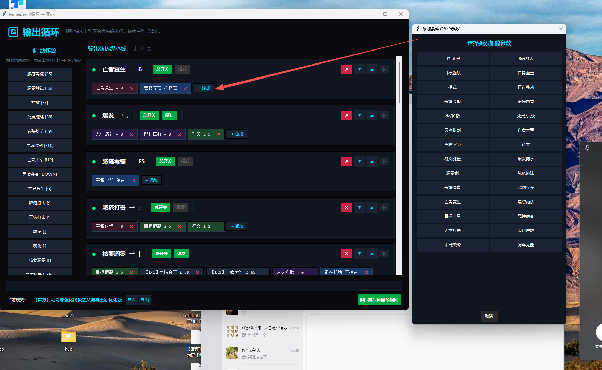
Example: adding the condition own HP ≤ 30% and runic power ≥ 30 to Death Strike gives you automatic low-HP healing.
Executor → Survival/Heal Settings. Everything is off by default; options only take effect when checked:
Click Save when done.
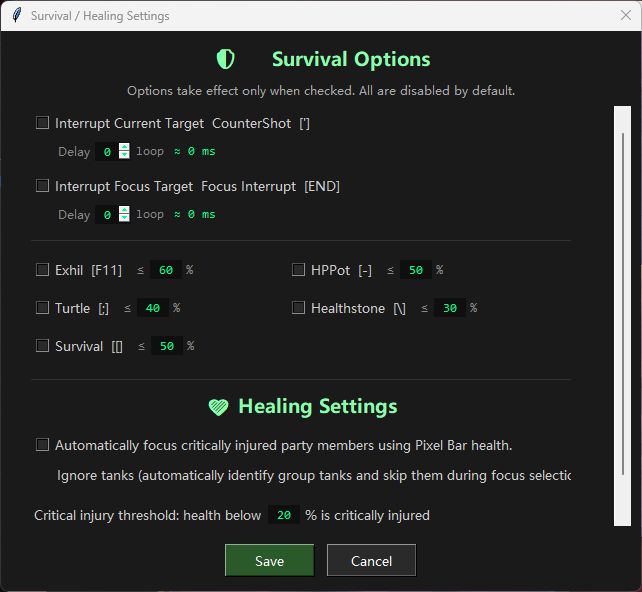
Executor → hotkey settings: global start hotkey (default CTRL+P, starts rotation + burst) and stop hotkey (default CTRL+O).
/reload in-game to save it to SavedVariables.| Feature | Description |
|---|---|
| Recharge | Renew your license or add specs; Alipay (primary + backup) and PayPal supported |
| Points Ranking | Weekly/monthly leaderboards; new board every Monday 00:00 (Beijing time), daily settlement with point rewards |
| Invite & Earn | Generate invite keys for new users (requires ≥ 15 days remaining on your key; invite keys activate after support approval) |
| Points Lottery | 100 points per draw; physical prizes require a shipping address |
| Mini Games | Point-unlocked mini games and the MaoGe Legend lite client |
| Edit Name | Leaderboard display name, changeable once every 30 days |
| AI Support | Smart Q&A, up to 5 questions per hour; include the full error message and your steps in one question |
| Help & Diagnosis | Self-service knowledge base + feedback channel |
| Feedback | Submit suggestions or issues; track status in "My requests" |
| Key Protection / Internet Cafe | Key-protection driver and a mode for internet-cafe environments |
| Settings | UI language (中文 / English / follow system); a restart applies the change |
| Tutorial / Extra Tutorials / Official Website | Links at the bottom of the main window |
Wrong recognition or a broken rotation? Run through this list first — 90% of issues live here:
Open the executor window and compare two areas with the actual game state:
Whichever area mismatches tells you where the problem is: Game Status wrong → calibration/layout issue; OCR numbers wrong → calibration or model issue.
5 ROI coordinates exported, run /reload.An ability is off cooldown but never fires:
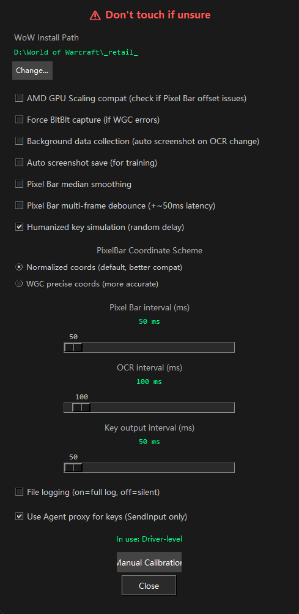
| Symptom | Cause & fix |
|---|---|
| Addon installed but invisible in-game | Install directory didn't point to _retail_; the addon uses a random disguised name (e.g. P3F8847DE), not "Permes" |
| Addon inactive after entering game | Check "Load out of date AddOns" in the AddOn list and Reload UI |
OCR shows -- or garbage |
Run the checklist, then recalibrate, then retrain the model |
| Two-digit misreads | An ROI box covers two numbers — fix the layout so each tracked region holds exactly one number |
| Buff numbers unreadable | "Hide When Inactive" is checked on Tracked Buffs — uncheck it |
| Everything suddenly unrecognized | Cooldown icons were moved or UI scale changed — re-import the official layout and recalibrate |
| Executor restarts after training | Normal behavior |
| Executor warns to keep Hub running | The Hub was closed — reopen it |
Compiled from the Help & Diagnosis knowledge base, grouped by scenario.
Q: "Machine ID mismatch"?
Caused by changing computers or major hardware. Contact support to verify and unbind the old device, then re-enter your original key on the current one.
Q: "Device binding limit reached" on a new PC?
Just activate on the new computer — the oldest device is unbound automatically. To keep a specific old device, sign out on the others first. Still failing? Ask support to clear old devices.
Q: "License key not found / already used"?
Check for typos (extra spaces, mixed-up letters/digits) and make sure the key came from an official channel. If it's still reported missing, contact support to check the key status.
Q: "Expired / revoked / pending approval / device banned"?
Expired → renew in the Hub or buy a new key. Pending approval (promo/referral keys) → ask support or your inviter to speed it up. Revoked/banned → contact support for the reason.
Q: Hub not activated / no active license?
Re-enter your key in the Hub to refresh, and update the Hub to the latest version.
Q: Session expired / signed out?
Check the network and restart the Hub; make sure the same key isn't running on another device (multi-login kicks you out).
Q: Is there a trial?
One trial per device and per network; the trial program is currently paused — please use a full license key.
Q: "Invalid signature/timestamp", or everything fails at once?
Set Windows time to sync automatically (Settings → Time & language), turn off any proxy/VPN, then restart the Hub.
Q: "Cannot connect to server / request timed out"?
Confirm you can browse the web; disable proxy/VPN; whitelist the Hub in firewall/antivirus and restart. "Under maintenance" → retry in a few minutes.
Q: "Too many requests"?
Wait about a minute; on shared networks (office/internet cafe), switch to a mobile hotspot.
Q: Download failed / package verification failed?
Retry so the Hub fetches a fresh link; switch networks (e.g. hotspot) to avoid hijacking; if verification keeps failing, note the error code in brackets and send it via Help & Diagnosis.
Q: Cannot create a payment order?
Check for unpaid pending orders (they occupy your order quota and expire in ~30 minutes); lifetime keys don't need renewal; repeated failures → contact support.
Q: Paid but nothing arrived?
First confirm the charge in your Alipay/PayPal bill. Charged → wait on the payment page for confirmation, usually a few minutes — do not pay again; over 30 minutes → contact support with your order number. Not charged → simply reorder.
Q: Primary Alipay failed, backup channel prompts?
If the primary channel fails, follow the page prompt to use backup Alipay. If the primary order is already paid, go back to the Hub and wait — do not pay again via backup. If the status can't be confirmed, check your bill first and never pay twice.
Q: PayPal failed/cancelled?
Cancelled or failed → reorder in the Hub. Paid → wait for confirmation in the Hub, don't pay again.
Q: "No permission for this spec" or spec greyed out?
Not purchased → add the spec in the Hub and restart Permes. Just purchased → restart the Hub to refresh permissions. "Module retired" → update Permes and pick another module; old calibration data is kept.
Q: Season card flash sale issues?
"Busy" → retry immediately a few times; sold out/not started → wait for the next sale; "already secured" → no further action needed.
Q: Insufficient points / unlock failed?
Earn points via referrals and events; if points were deducted but the reward didn't arrive, contact support.
Q: Cannot create a referral?
Your key needs ≥ 15 days remaining — renew first. Invite keys only work after support approval.
Q: AI Support limited?
Up to 5 questions per hour — wait an hour if you hit the cap; include the full error message and steps in one question.
Q: Name change failed?
The leaderboard name can only be changed once every 30 days.
BV1fS786wE1iBV1Jz7569E6Phttps://youtu.be/V3q6TlnII_8The links at the bottom of the Hub main window open these directly.
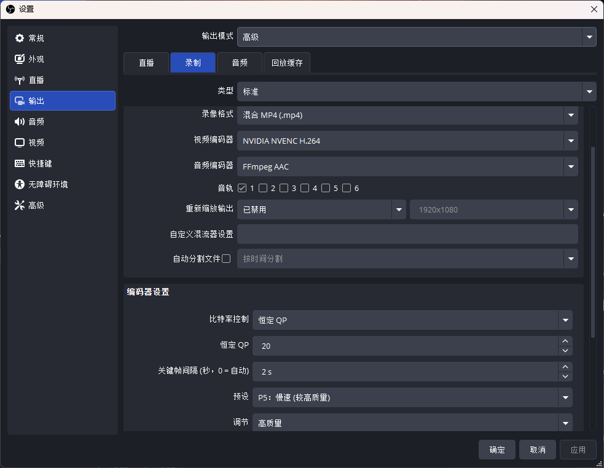
This guide is compiled from tutorial videos and the Help & Diagnosis knowledge base. UI details may change slightly between versions — the latest Hub and executor UI prevails.